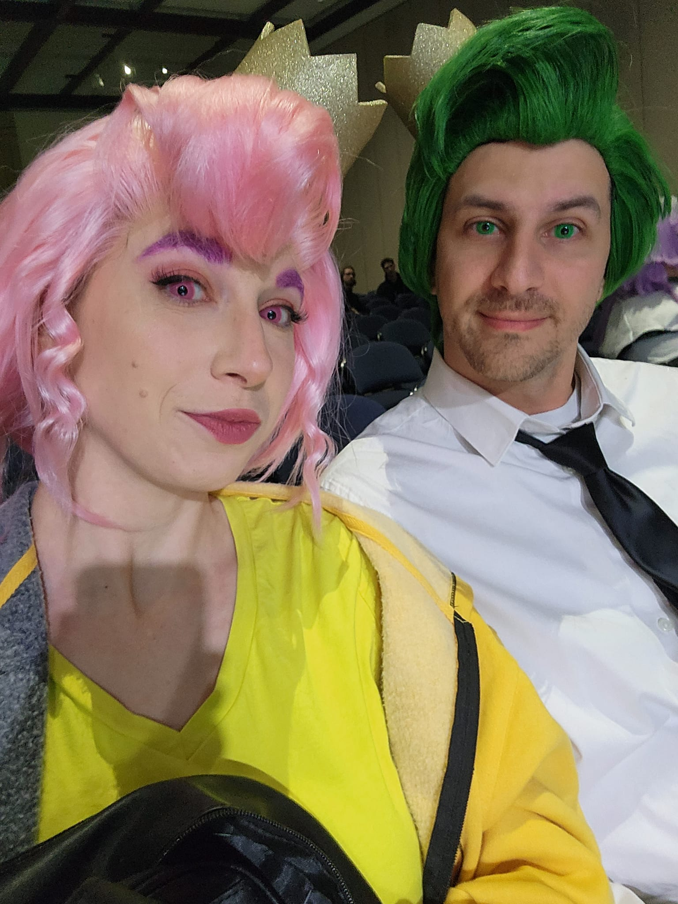
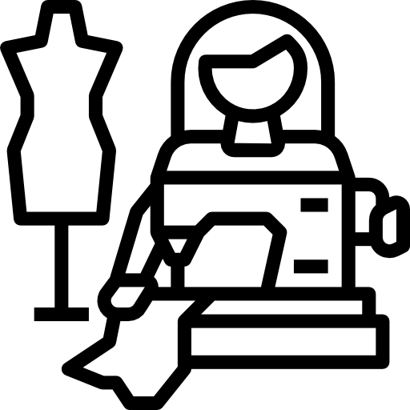

Media Kit

Conventions/Event Experience
- Cosplay Coordinator 2021-2023
- Special Guest Handler 2020-2022
- Head of Department (Gaming) 2023
- Cosplay Judge 2022
Programming
Outside the Box
We would discuss methods of working on cosplays that would be considered uncoventional and possible weird. Crafting is an amazing artform and you can use just about anything to get the visual you want! Flooring foam to make angel wings, googly eyes to make rivets. Hotglue in molds to make simple molds when resin isn't an option and more.
Feet & Needles & Thread, Oh My!
 This panel would be about sewing. Tips and tricks on how to sew just what you need. Going over things like, various feet and what they would be used for. The various needles and how to use them and tell them apart. Fabrics and how to determine what sort of fabric to use for what cosplay as well as thread. We would also go over learning how to read a pattern.
Wig Styling 101

In this panel we would cover wig styling at its basics. Wigs, where to get them and what to look for. Tools used in common wig styling such as crimpers, wide tooth combs, hair pins, flat iron and hair spray. We would touch on topics regardin teasing and shaping and how to complete some common anime looks like high ponytails and spikes.
Cosplay Contest Prep

We would discuss what to consider when you decide you want to join a cosplay contest. We would cover mostly craftsmanship aspects, starting with creating a build book for you cosplay and to take plenty of pictures of the progress. We would talk about what judges are looking for and what contestants should and shouldn't say about their work. The last thing we would touch on is stage preformance and what can break a tie between you and another cosplayer.
Learn to Play (various tabletop games)
We may have a plethora of games to play and learn. From the basics of Dungeons and Dragons to social deduction games like Werewolf and everything in between. We bring the games and would decide what game would be best during the time frame. Or let those who come decide and we could have multiple Learn To Play tables happening during the panel.